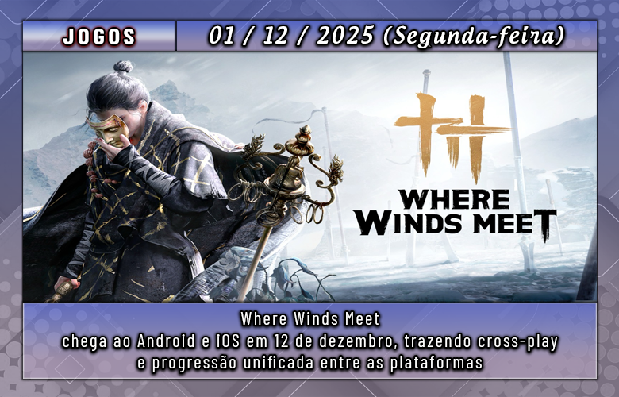
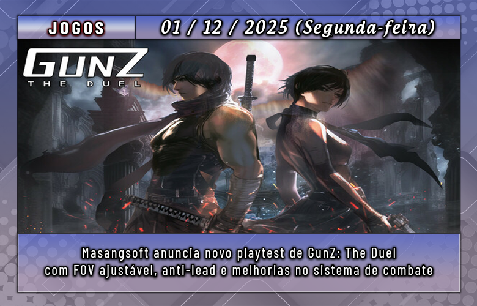

A Team Cherry comentou que pode partir para a criação de um jogo completamente novo depois de lançar o DLC de Silksong — que ainda não tem data definida. Porém, os desenvolvedores admitiram que a única verdadeira pressa que sentem é a “morte”.
Os cofundadores Ari Gibson e William Pellen levaram sete anos para desenvolver Silksong, aguardada continuação de Hollow Knight. Em entrevista a Jason Schreier, da Bloomberg, a dupla confirmou o DLC, mas também revelou que ainda não decidiu se o próximo passo será Hollow Knight 3 ou uma nova franquia. Segundo eles, o tempo que ainda têm para criar jogos pesa nessa decisão.
Gibson comentou:
“Temos outros projetos que queremos fazer. A única pressão sobre o tempo — e já falamos disso antes — é a morte. Se cada jogo leva sete anos, ou até mais, não temos tantas oportunidades assim. Seria ótimo conseguir desenvolver mais alguns enquanto ainda há tempo, a menos que algo inesperado aconteça.”
É uma perspectiva dura, mas que tem sido compartilhada por outros grandes nomes da indústria. Em 2023, pouco antes do lançamento de Starfield, Todd Howard afirmou que The Elder Scrolls 6 pode ser o último da série que ele dirige, justamente por causa do longo tempo que cada projeto leva.
Ele explicou:
“Quando penso em Elder Scrolls 6, faço as contas e percebo que não estou ficando mais jovem. Talvez esse seja o último da franquia que eu consiga fazer.”
Em maio, Hideo Kojima, criador de Metal Gear, também falou sobre como a pandemia o fez refletir sobre sua própria mortalidade. Aos 62 anos, ele disse que ficou gravemente doente e, pela primeira vez, se questionou sobre quanto tempo ainda teria para criar jogos ou até filmes. Chegou até a deixar ideias registradas em um pen drive, entregue ao seu assistente como um tipo de “testamento criativo”, caso algo acontecesse.
No caso da Team Cherry, Gibson e Pellen afirmam que, seja qual for o próximo projeto — um novo título ou Hollow Knight 3 —, ele seguirá a essência dos jogos que o estúdio já desenvolveu até agora.

Já disponível para PC e PlayStation 5 desde 14 de novembro, Where Winds Meet, o RPG de ação em mundo aberto e gratuito desenvolvido pela Everstone Studio, será lançado oficialmente para Android e iOS no dia 12 de dezembro, com suporte a cross-play e progressão compartilhada entre todas as plataformas.
Para quem quiser se antecipar, as versões mobile já contam com pré-registro aberto na Google Play e na App Store. Ao se cadastrar, o jogador garante avisos no dia do lançamento e ainda recebe recompensas gratuitas que facilitam o início da jornada.
Caso ainda não conheça o jogo, confira o trailer abaixo:
Ambientado na China do século X, durante a era das Cinco Dinastias e Dez Reinos, o jogo combina política, guerra e elementos clássicos de Wuxia. O jogador controla um jovem espadachim em busca de respostas sobre seu passado, explorando um mundo aberto vivo, repleto de cidades movimentadas, florestas densas e ruínas antigas que reagem ao clima, ao tempo e às escolhas feitas ao longo da aventura.

A Masangsoft revelou que GunZ: The Duel terá seu segundo playtest global entre 11 e 14 de dezembro, disponível pela Steam. Para quem não conhece, esta é uma nova edição do clássico shooter que, no Brasil, chegou a ser publicado pela Level Up!, mas teve seus servidores encerrados anos depois.
O novo teste contará com diversas melhorias, incluindo ajustes técnicos como tick rate aprimorado, controle de FOV, configuração de anti-lead de 0 a 100 e rede mais estável. O sistema de combate e a interface também foram atualizados: haverá novos efeitos sonoros e visuais para multi-kills, contorno opcional para inimigos, barra de HP com cores renovadas, além da remoção do lock de câmera durante o wall run.
Na parte de qualidade de vida, o playtest trará regras mais flexíveis para iniciar partidas (não será mais necessário que todos estejam prontos), detecção de AFK mais eficiente, e melhorias na interface de chat e da loja. Uma série de bugs também foi corrigida, incluindo falhas no indicador de HP/AP, problemas no placar e erros de clipping em mapas.
Quem quiser participar poderá solicitar acesso diretamente na página do jogo na Steam, já é possível solicitar o acesso.